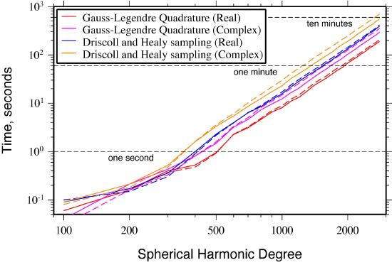

| HOME | DOWNLOAD | DOCUMENTATION | FORUM | FAQ |
> Home > Documentation
Speed
The following figure shows the amount of time in seconds that it takes to perform the forward and inverse spherical harmonic transform of a gridded data set as function of the spherical harmonic bandwidth. Results are shown for both the real and complex Gauss-Legendre quadrature (SHExpandGLQ, MakeGridGLQ, SHExpandGLQC and MakeGridGLQC) and Driscoll and Healy (SHExpandDH, MakeGridDH, SHExpandDHC and MakeGridDHC) routines. These calculations were performed on a MacBook Pro 2.4 GHz Intel Core 2 Duo with 4 Gbytes of memory using 64 bit executibles and level 3 optimizations. For the real Gauss-Legendre quadrature routines, the transform time is seen to be on the order of a second for degrees close to 500 and about 3.6 minutes for degree 2800. For the real Driscoll and Healy routines, the transform time is close to a second for degree 400 and about 7 minutes for degree 2800. The complex routines are slower by a factor of about 60%.
Figure 2. Time to perform the forward and inverse spherical harmonic transform as a function of spherical harmonic bandwidth using real and complex Gauss-Legendre quadrature and Driscoll and Healy routines.
If several transforms are to be performed using the same spherical harmonic bandwidth for Gauss-Legendre quadrature grids, these calculations can be speeded up by precomputing the Legendre functions on the Gauss-Legendre quadrature nodes. This is done by specifying the optional argument PLX with the routines PreCompute, MakeGridGLQ, and SHExpandGLQ. Note that the array PLX contains (L+1)(L+1)(L+2)/2 elements, and hence requires a considerable amount of memory for large degrees.
> Home > Documentation
| Centre National de la Recherche Scientifique | Institut de Physique du Globe de Paris | © 2011 Mark Wieczorek |